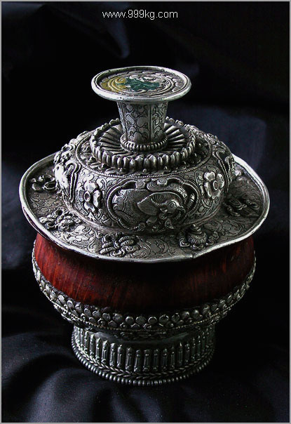

|
第四章：到了旅游点怎么拍
第四节：分类技术指导：
|
A，风光
B，建筑
C，人物
D，静物与特写
E，街头摄影
F，旅游合影
|
--------------------------------------------------------------------------------------------
A，旅游摄影之风光篇
1，风光摄影综述：稳定压倒一切
2，风光构图注意事项
3，白天的风景拍摄（不使用三脚架）
4，弱光/夜晚的风景拍摄（使用三脚架）
5，几种特殊风景的拍摄
a，车流、瀑布和星光
b，焰火与烟花
c，
---------------------------------------------------------------
1，风光摄影综述：稳定压倒一切
毫无疑问旅游摄影第一重要的是拍风景。旅游花了那么多钱，挤得汗流浃背，不搞几张漂亮的风景图片回家那可亏大了。说到风光图片，大多数人第一就会想到明信片、画册以及挂历，这些图片共同的特点就是特别清晰。要拍出超清晰的照片只有一个办法，那就是相机要超级稳定，杜绝任何震动。风光摄影的技术诀窍就在于邓小平说的：稳定压倒一切。
其中最重要的是以下三点：
1，尽一切可能使相机稳定，杜绝任何振动；
2，相机设定在最佳光圈F8或更小（如F11，16)；
3，ISO设定要尽量低，如ISO100。
为什么要ISO100？因为ISO最低时噪点最少，图片最细腻。ISO800以上的风光片是惨不忍睹的。请注意推荐ISO100是针对大部分数码单反来说的，有小部分数码单反如SONY的A700，它的动态范围最佳在ISO200，虽然此机ISO最低可到100，但对A700显然我们应该用ISO200来拍风光。但话说回来，ISO200以上拍摄风光依然不推荐，除非万不得已。
为什么要F8？在第二章名词解释光圈时我们有一个重要结论：镜头在中等光圈的时候解像度最高。135数码单反镜头的中等光圈为F8。小数码DC要看具体机型，如果可选光圈值在F2.5到F8之间，中间的F4.6为最佳光圈。
为什么有时需要F16甚至F22？第二章名词解释说过：如果要求最大景深的同时图片解像度也要最高，这是一个不可能完成的任务，因为最大景深要求光圈F22，而最高解像度要求F8的光圈。如果景深的重要性超过解像度，那就只能优先照顾景深。
曝光准确性基本不用担心，现代相机的区域（平均）测光都很准。但日出前后的拍摄要多加留意，光照强度变化非常大（有云时尤甚），要不停的回放看图片效果，及时加减曝光。也可用点测光，但我用得不多。
关于稳定性，毫无疑问三脚架是第一选择。但并不是说任何时候都必须三脚架。如果白天光线非常好，快门速度已经高于安全速度好几倍，又或某些特殊情况下无法使用三脚架，手持相机也一样要拍。本章把风光摄影在技术上分为两类：使用三脚架的和不使用三脚架的。
2，风光构图注意事项
在讨论光圈快门等技术活之前，先说几句构图。总体来说依然应该遵守第三节提到的构图原则，以黄金分割为主，辅以对称，搞点前景，并注意留白。
风光图片的留白往往指天空，也就是天空在图片中占多大比例。一般来说从1/3到1/6都是可以的，没有绝对标准。如果天空云彩漂亮就多留，反之则少。如果遇到罕见的戏剧化天空如火烧云，那就干脆以天空为主，白留给地面。
戏剧化的光线也正是风光摄影需要刻意找寻的。所谓戏剧化就是明暗或者颜色对比很强烈的场景。拍摄风光要时刻注意那种偶尔钻出来的一缕缕的光线。


对比强烈的光线案例
风光构图另外一个重要问题就是参照物。有人旅游拍了很多名山大川，自己看着很雄伟，但外人却感觉不到，因为图片里没有参照物，谁知道是不是个假山？所以风光图片是否包含参照物显得尤为重要。参照物可以是人，亭子，汽车，任何一般人知道大小的物体都行，用以衬托山川的雄伟。参照物还能起到视觉焦点的作用，乃点睛之笔。如果你不能确定是否应该包含参照物，那就包含与否都拍，反正数码片子不要胶卷钱。
这里顺便说说地平线。一般情况下地平线一定要平，如果云台上有简单的水珠水准仪是最好。

参照物示意图
踩点很重要。会当凌绝顶，一览众山小。拍风景最要找的是制高点。爬山/爬楼不可避免。我一般到景点就会四处打听此处最高点在哪里。爬到山顶满眼风光，很多人上来就换上广角镜头。大全景当然要拍，但不要忘记也换上70-200/300mm中长焦镜头，选最漂亮最有特色的局部也拍几张。构图要简洁，切忌贪多是我们的一贯原则。以下为在制高点用中长焦拍摄之案例：
 |
|
 |
 |
|
30楼屋顶拍摄的长沙湘江大桥，105mm中焦距 |
|
|
上海东方明珠电视塔观景台所拍的黄浦江，135mm中长焦 |
|
在酒店50楼用85mm中焦距拍摄的新加坡金融区 |
踩点首先是家庭作业（查旅游点资料和图片）；第二，到达旅游点第一件事：赶紧找当地明信片和画册，看看哪几张拍得最漂亮，然后装做要大量购买的样子问店家：这张是在哪个地方拍的？
地点确定，然后扛着三脚架去那地方守着，只要有足够的耐心等到理想的光线，这风光糖水片就搞定了。这些当地明信片一般都包含旅游点的地标建筑，北京肯定要有天安门，拉萨一定会有布达拉宫。包含这些地标建筑的风光片是旅游风光摄影的首要目标。
其实地球上著名城市和景点早就被大师们拍烂了，以至于最佳拍摄点往往都立着牌子：此为拍照处。这并没有什么不好，模仿并不为丑，有谁生下来就写得一手漂亮的毛笔字？大家都是从临摹开始的。运气好的话在临摹的过程中我们还能发现比明信片更好的构图。
3，白天的风景拍摄（不使用三脚架）
点踩好了，在作案的具体实施阶段，最重要的还是相机的稳定性。稳定性至高无上。基本原则：时刻记住安全快门速度是焦距的倒数，如50mm焦距拍摄时最慢要用1/50秒快门，最好再快点，1/125乃至1/250秒，越快越好。为此要不惜使用高ISO/大光圈（在不可能使用三脚架的情况下）。
不管凡事需有度，没有必要一味追求超高快门速度，超出安全快门速度两三倍即可。在保证了速度后，也要适当考虑最佳光圈（F8）和尽量低的ISO。
拍风光经常用到ISO100加F16，大白天的快门速度可低到1/25秒甚至更慢。在万不得已不能使用三脚架的情况下，手持拍摄稳定相机注意事项
有：
I，坚持双手持机，即便口袋小DC也要如此。
II，光线不佳时只要手持相机，就习惯性打开机身或镜头防抖。
III，两腿前后站立，不要平行站立。
IV，尽可能寻找身体支撑，如靠墙或树站立，或手肘撑在栏杆或窗台上等。
V，按快门要温柔，切忌粗暴，呼吸要均匀，也可短时停止呼吸。食指按下去要匀速，切忌突然加速。
VI，如果觉得这张照片有糊掉的嫌疑，那就赶紧重复多拍几张，总有一张相对清晰点。
关于防抖的补充说明：在防抖功能打开后，按快门不要太快，因为防抖系统从启动到稳定下来需要0.5到1.5秒左右的时间，别在这个时间内触发快门，要等防抖系统稳定之后才触发快门。如果是镜头防抖（佳能的IS和尼康VR等），你可以从取景框里清楚感觉到防抖系统从启动到稳定的工作过程。按快门坚持慢速和匀速总是正确的。对于转瞬即逝的街头抓拍，半秒也不能耽误，有时不得已需要迅速按下快门。如果光线条件好如大晴天走在大街上，建议干脆关闭防抖。
4，弱光/夜晚的风景拍摄（使用三脚架）
时间和耐心对弱光风景的拍摄非常重要。最能拍出好风光的时间是日出和日落时分。如果日出为早上七点，你需要提早一个小时起来去踩点寻找合适的角度。为了保险起见，也可提前一天去踩点。日落时分先别忙着去吃饭，这时的天空往往是最戏剧化的。而夜景的最佳时段是在天快黑但还没完全黑的15分钟左右。此时建筑物的轮廓还依稀可辨，而灯光已经很突出。再晚半小时就黑乎乎的，除了灯光以外什么都看不见了，明暗反差太大。因为适合拍摄夜景的时间只有短短的15分钟，我一般提前两个小时出来踩点，然后架好三角架在那等着。

等待拉萨（时间和耐心非常重要）
夜景经常需要曝光数秒、数分钟以至数小时，此时只有神仙才端得稳相机，毫无疑问必需一个巨大而稳定的三角架（以及云台）。其次要坚决用快门线（因为按快门时手会抖）。一个几百元的狗头以中小光圈固定在稳定的三角架上用快门线，比一个上万元的专业镜头手持拍摄的效果要好10倍。
在此重点强调三脚架。我发现不少摄影爱好者的相机和镜头都很高级，一个摄影包里装了好几万的家伙。但他们没有随身携带三角架的习惯，要不就是用着一个晃晃悠悠的劣质三角架。真不知道他们在想什么。一旦相机端不稳或架不稳，在机身和镜头上的投资都将化为乌有。练功夫就要从蹲马步开始，脚底站不稳就没法练武功。三脚架除了稳定，它还能让我们养成严谨的摄影习惯。相机老拿在手上容易啪啪的一顿扫射。虽然数码相机不要胶卷钱，但一天几百张下来会占很多硬盘空间，后期处理也工作量巨大。
什么样的三角架算是稳定？把架子完全打开，前后左右用力按，晃动者枪毙。没有三角架就不要谈严肃的风光摄影，免得让人笑话。在体力所及范围内扛上一个尽量大的三角架，最好任何时候都不离身。世界上怕就怕认真二字，能带的时候必须带上三角架，不能带的时候克服困难也要带上。职业风光摄影95％以上的图片使用大型三角架，这也正是职业摄影师和业余爱好者的主要区别。加拿大风光摄影权威之一Michael Reichmann 说过：我有三个三角架，它们分别是：大的，更大的，最大的（big, bigger, and
the biggest）。
我本人有点不稳定恐惧症，连风吹对三脚架的微小晃动都很担心，经常在三脚架下挂一石头或摄影包以增加稳定性（注意别让摄影包晃动）。有时候在大桥上拍，三角架本身的稳定性没问题，但汽车特别是大客车经过的时候桥面的振动也让我心惊肉跳。我都是等到大车过了才按下快门。都快成神经病了。
一般来说，相机一上三脚架我会就习惯性地干两件事：1，打开反光板预升功能；2，关闭相机或镜头的防抖功能。不管是CCD防抖还是镜头防抖（IS/VR等），那都是在手持相机时发挥作用的，在三脚架上防抖功能反而会使图片清晰度下降。虽然最新型的镜头号称能自动关闭防抖（据说能自动探测是否使用了三脚架），但保险起见还是手动把它关了吧，一秒钟的事。
谈一下反光板预锁（MLU，mirror lock
up)。单反相机一按下快门就会咣当或者咔嚓的一声，这声音是因为反光板要先翻上去，然后打开快门开始曝光，曝光结束快门关闭，反光板再回位。反光板的上翻会撞击相机产生微小震动使照片发糊，虽然很微小，但如果图片放大到12寸以上还是能看出来，快门速度在1/10秒左右时反光板震动产生的模糊尤为突出。
反光板预锁实际上就是按两次快门才拍一张照片。按第一下快门时反光板翻上去，此时请耐心等待三秒钟，等微小震动完全消失，再按一次快门，完成拍摄。
反光板预锁一般是结合快门线使用的，直接按快门的手很难做到完全不抖。
口袋小数码相机和M4/3系统相机没有反光板，无需担心反光板预锁问题。如果没带快门线也不要紧，用自拍即可代替。
用三脚架拍风光特别是夜景风光推荐用A模式，也就是光圈优先Aperture Priority。也可用M档全手动控制光圈和快门。夜景风光千万不要使用相机的绿色自动档或者半自动P档。高速快门能防止抖动，弱光下相机内的电脑选择的曝光组合是尽量高速的快门和最大光圈。但是一个镜头在最大光圈下解像力是最差的，最佳解像力是在中等光圈值F8/11。拍夜景设定F11的光圈，对应的快门速度可长达10秒以上，所以我们都支好三角架。相机内的电脑虽很聪明，但还没有聪明到判断摄影者是否携带了三角架。所以不能用P档。
城市夜景风光为了显得灯火辉煌，略微过曝光是必要的。具体过曝光1/3档，半档或者一整档要看你自己的喜好，和此相机对夜景测光的准确性（有的相机很容易被灯光欺骗，欠曝严重）。为了保险，最好进行包围曝光，一个场景我一般拍三张，相机给定的曝光值一张，过半档和一档各一张。
夜景的准备工作方面，在秋冬季要注意多穿衣服，带上半指手套，一个小保温水壶。晚上气温低，要注意防感冒。夏季要注意带上花露水等驱蚊用品。其次，要带个小手电，有时候目标太暗以至于无法自动对焦，手电可以局部照明让相机对上焦。手电照也不管用？那就目测一下距离然后手动对焦好了，或者干脆设置到无限远。
关于滤色镜，偏振镜为必须，但也不要滥用，比划一下效果，必要时才用。UV镜我从来不用，我的镜头都是裸体的。灰渐变滤色镜也带一个吧，夜景明暗反差很大时用得着。没有渐变镜也行，包围曝光三张再PS后期合成，效果也很好。还建议带个黑色小纸片，明暗反差太大时可在镜头前面局部遮挡。
5，几种特殊风景的拍摄
a，车流、瀑布、喷泉和星光
瀑布和夜景车流看起来一点也不相关，一个白天一个晚上，但它们的拍摄方法是相同的，那就是用三角架进行长时间曝光。拍摄瀑布最短的曝光时间也需要半秒，常用2秒，这样流水就能在底片（或CCD）上滑过，得到如雾似烟的效果。车流需要更长的曝光时间，通常在十秒以上，有时超过三十秒，这样车灯才能滑过相当的距离。具体要
多少秒可以自己试，反正数码片子不要钱。
|

世界最大喷泉，新加坡新达城的财富之泉。曝光约四秒。三百万像素的佳能G1小DC拍摄。 |

湖南株洲炎陵县桃源洞东坑瀑布局部。曝光1秒，光圈f8，使用偏振镜。三百万像素的佳能G1小DC拍摄。 |
|

曝光约十秒的长沙火车站喷泉 |
第一步，先把相机的ISO调到100。第二章名词解释说过（ISO与图片质量），拍摄风光需要用相机的最低感光度，一般来说是ISO100（有的相机是50，还有的是ISO200），这样才能得到精细的画面。
第二步，确定测光模式。瀑布和车流一般用局域平均测光即可，用中央重点测光也可以，一般不使用点测光。
第三步，确定拍摄模式。可以用光圈优先，快门优先或者全手动模式，任何一种都可以：
光圈优先：对135数码单反镜头来说我们应该把光圈设置为最佳解像度f8或者f11。把相机顶上的主转盘打到Av（或者A)，然后设置光圈f11，对准瀑布半按快门，相机就自动给出能准确曝光的快门速度。如果快门速度不够慢，只有1/4秒怎么办？
减小光圈即可，从f11减小到f16。如果减小到f22还是达不到一秒的快门速度怎么办？此时可以使用偏振镜，它像墨镜一样能起到减光的效果，可以进一步降低快门速度。偏振镜一般可以使快门速度降低一到两档，比如从1/4秒降到1秒。偏振镜还有消除树叶和水面反光的作用。当然我们也可以使用减光镜（也叫中灰镜），其作用类似墨镜。中灰镜有2x、4x、8x等不同规格，数值越大减光性越强。中灰镜只是单纯降低光照强度，不能消除树叶和水面的反光。

上海外滩。光圈f16，曝光约20秒
快门（速度）优先：把相机顶上的主转盘打到Tv（或者S），拍瀑布的话一般设置速度2秒，车流我多用20秒。选好场景确定构图，半按快门，相机就能自动给出能准确曝光的光圈。如果是f11那是最好。如果是f5.6或者f4也不要紧，进一步减低快门速度即可，f5.6两秒、f8四秒以及f11八秒都一样能正确曝光。
全手动模式：把相机的主转盘打到M，同时调整快门和光圈，观察相机的测光指示，等达到中间值（不+也不-)时按下快门即可。
综上所述，光圈优先、快门优先或者全手动模式在拍摄瀑布和车流时其实是殊途同归，都是为了要达到两秒或者更长的曝光时间，并使用最佳光圈。如果不行就继续把光圈开小（此时景深也会变大）。如果开到f22最小光圈还是不能正确曝光就使用滤色镜，偏振或者中灰。
拍瀑布的时候如果你想拍得幽暗一些，减低曝光半档即可。拍车流的时候如果你想拍的金碧辉煌一些，那就增加曝光半档或者一档就行。
如果极端一点，把曝光时间延长到一个小时（3600秒）甚至更长，黑漆漆的夜空也能拍出漂亮的星星轨迹。地球每十四分钟转动一度，星星的光虽然很弱，但曝光两个小时就亮了，还会拉出漂亮的轨迹。夜空都是黑漆漆的，我们的肉眼并看不到这些轨迹，从这个角度来说，瀑布车流和星空的照片都是造假。假得漂亮一些，就艺术了。

珠穆朗玛的星空。晚11点到凌晨3点4小时曝光。
拍瀑布或夜景车流我严重推荐使用快门线以彻底消除手震。如果没有快门线就用自拍，反正手别碰相机。如果是拍星空，那快门线就是必须的，总不可能手钉在快门上几个小时吧
，那还不得断了？
焰火与烟花
逢年过节经常有焰火与烟花表演，很多人觉得看起来容易拍起来难。其实拍礼花和城市夜景的方法是一样的，那就是1，尽一切可能使相机稳定，杜绝一切振动；2，相机设定在最佳光圈F8，ISO设定在最低（如100）；3，想办法包含一个醒目的前景。这个前景很重要，要不然世界各地哪里的烟花都一个样子。
在这张图片里我选择了鱼尾狮为前景，在新加坡没有什么比作为国家象征的鱼尾狮更好的前景了。佳能1ds mark II 数码单反，B门,
3.9秒, F7.1, ISO100, EF28-135镜头 @ 28mm, 三脚架，快门线，手动对焦到无限远。
推荐的光圈F8要灵活掌握，如果拍了两张发现欠曝严重，那就赶紧加大光圈，比如F6.3，反之则赶紧缩小光圈。曝光时间一般建议4秒以上，看单个烟花燃放时间的长短。之所以要4秒以上是要拍出烟花拖着长尾巴升空然后炸开，显得有动感。
数码单反拍摄我建议用B门和快门线。B门可以任意控制曝光时间，快门按下去几秒就曝几秒，根据烟花升空的情况灵活掌握。比如你可以曝光10秒以便让更多烟花炸开，但也要注意别过曝太多。
毫无疑问，这必须用三脚架。如果连续几张都是一个角度相机纹丝不动的话，后期还可以PS做叠加，显得灿烂无比。

旅游摄影之建筑篇
大部分建筑本身都是对称结构，所以在构图上我们应该以对称为主，黄金分割为辅，可能的话搞点前景，并注意留白。此外，
因为建筑设计本身就是以形状取胜，所以要拍出漂亮的建筑图片最重要的是寻找有趣的形状，如圆形，L形，V型，三角形什么的。如果建筑物全局的形状不好找，局部的也行。腿要勤快，如果构图不满意，在按快门前多绕此建筑走一走，不同的距离，不同的角度看看，直到你找到满意的形状为止。以下为有趣形状举例：
|

|
 |
|
|
上海火车南站候车室 |
新加坡Gateway Tower |
北京国家大剧院 |
上图左一和左二都是正面拍摄，全对称结构，稍嫌呆板。从侧面拍摄画面会活泼一些，如右边这张北京天安门就是45度角拍摄。
具体机位而言，一般有仰视、平视和俯视三种。下面左边两张是典型的仰视拍摄，其特点是线条向上汇聚，夸张变形很严重。机位越靠近变形越大。这种变形有利于表现建筑物的高大雄伟。取景时要注意虽然两边线条是斜的，但图片最中一定要垂直于地
平线，否则建筑物就有倾斜倒塌的感觉。如果不想要这种变形，那就离它远点拍，等基本相当于平视取景时汇聚变形就消失了（最右边那张）。
|
 |
 |
 |
|
|
 |
左边这张是新加坡金融区，典型的俯视拍摄，其特点是线条向下汇聚，正好与仰视相反。当时为阴雨，天空没什么特色，所以天空只占很小部分。Sigma适马17-35mm镜头@20mm. |
|
|
|
 |
左边这张新加坡淡宾尼购物中心也是俯视拍摄，线条向下汇聚，建筑物的内景俯视。这张构图也
基本遵循了黄金分割，天花板占了图片上部约25%的面积。佳能1ds
MARK II相机，Sigma适马17-35mm镜头@20mm，ISO1250，手持拍摄。 |
|
|
|
 |

|
 |
|
岳麓书院 |
长沙富丽华酒店客房 |
长沙北正街天主教堂 |
|
|
上面三张都是在三脚架上拍的，Sigma适马17-35mm镜头，20mm左右的广角。前两张基本平视，所以没有线条向上或向下汇聚的问题。拍室内一般常用20mm左右的广角镜头，能夸大空间感，使本来没多大的房子显得很大。这也正是酒店和房地产商最喜欢的。 |
|
|
 |
新加坡会展中心Expo地铁站。天空为漂亮的蓝色，很显然是在傍晚拍摄的
- 夜景的最佳时段。Sigma适马17-35mm镜头@20mm。由于大广角加仰拍，变形非常严重，整个屋顶变成了一个大椭圆形帽子。变形虽不好，但我们将计就计也能搞出有强烈视觉冲击力的效果来。 |
|
|
 |
虽然拍建筑常用广角镜头，但并不是说中长焦就不用。在拍摄建筑物局部，以及远距离拍摄时依然离不开长焦。左图为200mm焦距拍摄的新加坡印度庙。右图为105mm中焦距拍摄的北京前门局部。 |
 |
广义来说建筑也是风光摄影的一部分，所以前面提到的风光摄影技术原则同样适用于建筑摄影，那就是：
1，尽一切可能使相机稳定，杜绝一切振动；
2，相机设定在最佳光圈F8或更小（如F11，16)，ISO设定在最低（如100）；
3，确定是否包含参照物。
除了建筑的外形，建筑物的内部也是重要的拍摄对象。但很多大厦的保安人员一般都不让你拍照，尤其当你手持体积巨大的数码单反时。办法有两个：1，事先联系大厦管理部门取得许可证；2，偷偷进来，拍了就走。搞许可证太费事，但溜进来拍了就跑意味着无法使用三脚架，为了使图片不糊，有时只能使用高ISO或者大光圈，这很不利于得到高解像度图片。这世上没有完美的事，清晰度稍差总比没拍到好吧？
旅游摄影之静物与特写篇
有当地特色的食品纪念品等是旅游摄影的重要内容。静物的拍摄我依然推荐三条：
1，尽一切可能使相机稳定，杜绝一切振动；
2，相机设定在最佳光圈F8，ISO设定在最低（如100）；
3，以满框构图为主，且尽量简化背景。
对静物与特写，参照物并不是必须，所以省略参照物，增加满框构图和背景简化这条。
第1和2与风光摄影完全一样，我们同样需要清晰的图像，所以还是尽量用三角架和快门线，有反光板预锁的必须用上。总之相机的稳定性至高无上，再专业的镜头端不稳都白搭。
 拍摄静物用简洁的背景突出主体非常重要，就如同证件照用单一的红布背景突出大脑袋一样。
举我在西藏拍的一个木碗说明简单背景的重要性。当时为了突出木碗实在找不到一个暗背景（此木碗本来就很暗），我就把黑色羽绒衣脱下来当背景。当时是左边窗户的单一直射光，我就把白色茶杯托盘竖在右边当反光板用。西藏普兰县以产木碗出名。这是在一个藏民家里拍摄的，他们拿来装糖的。木碗底部镶着银边，银盖子尤显精致。2002年5月摄于西藏阿里玛旁雍错藏民家，佳能G1数码照相机，ISO50，三角架，微距模式
，十秒自拍。
拍摄微距还要注意精确对焦，因为微距拍摄景深非常浅，容易误操作，一不小心焦点跑了，背景清楚而主体却模糊
。
图：背景的调整。西藏普兰木碗。
虽然建议光圈F8/11（镜头的最佳解像度），但也没必要生搬硬套，如果虚化背景很重要，则可用F4，F2.8甚至更大。如果你需要背景也清楚，或者整个静物前后所有细节都清楚，则可用光圈F16或更小。
对于建议的ISO100也是一样，必要时也可用高ISO。比如我在北京拍这个冰糖葫芦，当时排队的人群挤来挤去，不可能用三脚架，而且风吹得糖葫芦直晃，我意识到要用尽可能高的快门速度才能把这个糖葫芦定格，于是我用了ISO400，最大光圈F5.6，这才达到 了1/125秒的较高快门速度，同时也基本满足了1/135秒的最低快门速度要求（这里的焦距是135mm，手持拍摄最低快门速度为焦距的倒数）。虽然图片没有达到最佳解像度，但也算基本满意了。 了1/125秒的较高快门速度，同时也基本满足了1/135秒的最低快门速度要求（这里的焦距是135mm，手持拍摄最低快门速度为焦距的倒数）。虽然图片没有达到最佳解像度，但也算基本满意了。
图：北京街头冰糖葫芦
如果拍糖葫芦时风再大点，我会毫不犹豫的用ISO800甚至更高。摄影的几个基本元素经常互相矛盾，不可能同时满足，比如大光圈和锐度，大光圈和大景深，高ISO和低噪点等。如何选择要看我们的主要目标是什么，力保一个，放弃其他。
这张图片也说明满框和紧凑的构图是特写所必需的。必要时可只拍局部，没必要把一大束糖葫芦都拍全，只选最有特色的这个核桃糖葫芦，像个大笑脸。别人应该能想象出这是一大束冰糖葫芦的一部分。


静物与特写之博物馆篇
大型博物馆也是旅游常去之处，尤其中国自2008年以来大多数博物馆都免费开放，这个天上掉下来的免费午餐不吃实在可惜。如何把博物馆的图片拍好
，这里总结个人经验如下：
1，不能穿白色的衣裤，任何浅色的衣服都要避免，纯黑色的衣服最好。因为展品大多数都在玻璃柜子里，浅色衣服反光严重，严重不利于拍照。
2，展品的正面侧面都拍两张，构图一般把图片拍满框。
因为玻璃反光严重，我一般都绕着展品转一圈，在反光最小处拍摄。
3，一般我不用UV镜和遮光罩。选好角度后，把镜头紧紧抵住玻璃拍摄。镜头抵玻璃有两个好处：a,进一步减少反光；b，减少相机的震动保证图片清晰。


4，选择RAW图片存储格式，最好不要存JPEG。展品的照明光源很复杂，冷色和暖色交织，很多时候相机的电脑被搞晕，对白平衡做出错误的判断。JPEG格式的图片后期调整白平衡难度
较大，RAW图片后期可随心所欲调整色温。
5，成百上千的展品会把人搞晕，为了避免后期发表的时候张冠李戴，每拍一张RAW后立即对着展品的说明标牌拍一张。请注意立即二字，要不然还是有张冠李戴的可能。拍展品说明用JPEG即可，RAW文件太大了。
6，
光看图片很难估计这展品到底有多大，所以拍一些包含参照物的图片很有必要，通常我是都把观众包含在图片里面。展品都是死的，图片包含人物也有利于活跃气氛，让看图的人有身临其境之感。


7，如果你的主要目的是拍照，最好去之前打电话问是否允许拍照。不准拍照也无需绝望，可以联系博物馆负责人（办公室），称自己是职业摄影师并许诺免费（或低价）提供所拍图片给该馆使用，或谎称是记者。还行不通的话可以继续跟他们磨，给点钱也许就让你拍了。比如西安兵马俑博物馆，如果你事先联系并付500-1000元钱（看你的讲价能力），在保安的陪同下你是可以下坑拍摄的。这是一个图片公司的美女助手告诉我的，下次去兵马俑你可以试试。
8，关于拍摄的器材，小数码DC在ISO400以上图片就很难看了，如果有数码单反DSLR最好。因为展品的照明大多不是很强，而且博物馆一般不许用闪光灯也不准用三角架，很多时候我被迫使用ISO1000以上的感光度。绝大部分图片我都是用佳能Canon
EF28-135IS拍摄，这个焦段基本够用，对于很小的展品（如小玉佩）有70-200/300长焦甚至专用长焦微距镜头当然更好。
9，要准备好足够的时间，仔细拍摄一个大型博物馆需要至少半天到一整天，要带上矿泉水和干粮，还有就是要带上备用电池和足够的存储卡。
10，不但要拍单个的展品的特写，还要拍展厅内景，最后还要拍摄博物馆建筑的外景，这样才是一个完整的博物馆专题。
旅游摄影之人物篇
旅游途中拍人物的机会是很多的，当地人长相打扮都颇有特色，会使我们的相机忙个不停。构图当以简单为主，肖像照就似大头贴，按护照和身份证照片的要求办事就好，和前面提到的满框构图原则完全一致。以下为大头照案例：
不过凡事别走极端，有时不可一味追求大头照。如果是个少数民族衣服很漂亮，那就至少拍个半身，把上衣拍全。如果裤子也漂亮就拍全身。又或者此人手持一个有特色的物品，那就至少的把手部以上连大脑袋一起拍进来。前面构图总原则提到过：在按下快门前一定要想想：能否继续减少取景框内的事物？如果再排除一个那我想表达的意思就不完整了，这时才可以按下快门。看看下面这些案例，如果只拍大脑袋不拍上半身，效果会怎样呢？
除了大头照和半身像，如果人物周围的东西能起到交待环境和烘托人物的作用，那就别管大头照原则了，连人带物一起拍吧。此时就不是纯肖像摄影了，称之为环境人像更为准确些。
环境人像案例
在光圈快门等具体的技术操作上，肖像照一般教科书都推荐大光圈，这一般不错，因为大光圈小景深，拍出的图片除了大脑袋清楚，四周的杂物都模糊。而且大光圈意味着高速快门，能提高图片清晰度。但环境人像需注意，光圈太大会导致景深太浅，有可能人脸部清晰而四周的物品却模糊，此时一味追求大光圈就不可取了。实际上，街头抓拍我通常没用（大）光圈优先模式，用的P模式，ISO设定在较高的400，因为街头人物的动作和表情都是转瞬即逝的，能抓住这个瞬间表情就是胜利。我只管眼睛去捕捉，一切技术活都交给相机的电脑。至于大光圈虚化背景/高ISO噪点多等等，那是第二考虑的事情了。
不过话说回来，街头抓拍人物时ISO的设定还是和拍风光一样，如果光线条件好能低则低，比如ISO100/200。但光线差的阴雨天或清晨黄昏，过低的ISO会导致慢速快门，如果快门速度低于焦距的倒数就不好了，就算你在防抖功能的辅助下端稳了相机，拍摄对象一动身或一转头，照片依然会糊。要时刻记住清晰的图像第一重要，为了清晰我们要毫不犹豫地使用高ISO或大光圈。高ISO噪点多，大光圈时锐度不佳，但这没办法，只能保第一重要的目标。
提两句摆拍的肖像。曾经有严肃的大侠反对摆拍，我认为大可不必。旅游摄影不是纯纪实，也不是警察拍车祸现场，摆拍抓拍我认为均可。摆拍的最高境界是不露痕迹，达到抓拍的效果，这也是需要相当功力的，有时还意味着花时间与拍摄对象沟通，使他忘记你的照相机。
关于人像的焦距，一般都推荐85或者135mm，这也是人像镜头的焦距。这只是顺带提一下，以尽量高的清晰度抓住那动人的一瞬间才是最重要的，焦距长短均可。我也并不推荐在街上用定焦人像镜头，贵还不说，定焦头灵活性太差。标准变焦头的焦距一般都涵盖从小广角28mm到85mm，方便灵活，适合抓拍。上面举例的那十几张人像我大部分都是EF28-135标准变焦镜头拍的。
用标准变焦镜头拍大头照，这往往意味着离拍摄对象很近，有时甚至只有一两米的距离。对于性格内向的同学这需要相当的勇气。没办法，只能脸皮厚一点，我也是练了很久才狠得下心来。也可采用慢慢靠近法，或声东击西法，装作拍别的东西，然后突然转向拍他。有一点要注意，不少旅游点的居民在发现你拍他之后会问你要钱。这个风气不好，除了明码实价收费拍照之外，我认为给现金是不可取的，给个笑脸吧。如果对方是商贩，那你就在他摊子上买点什么小东西。或者干脆装日本人，听不懂。
最后提一点肖像权。《中华人民共和国民法通则》第100条规定：“公民享有肖像权，未经本人同意，不得以营利为目的使用公民的肖像。”在大街上抓拍别人，会不会有肖像权问题？如果图片只是回家自己慢慢欣赏，当然不会有问题。照片上传到论坛网站或博客上，我认为也基本没问题。但直接用于商业目的需谨慎。
2005年5月25日北京市海淀区人民法院就110跨栏飞人刘翔诉北京《精品购物指南》报侵犯其肖像权一案作出了一审判决，判决原告刘翔败诉。刘翔一案的关键，是报社在使用刘翔肖像时是否是商品广告中的一部分，也就是说是否与商品广告有关联。我个人认为，只要不直接用于广告，在报刊杂志上发表街头抓拍的肖像，一般不会构成侵犯肖像权。但谨慎起见，最好先和杂志编辑或律师协商。对于聘用模特在旅游景点摆拍，那是另外一回事，签订肖像权协议是必须的。
旅游摄影之街头篇
如果说旅游摄影是个万金油的话，旅游街头摄影
就是十万金油。它涵盖一切，只要是街上拍的都行。在数码相机全自动的今天，走在大街上随手按几下快门，世界上比这简单的事还真不多。街头摄影在技术上也最简单，一般情况下光圈快门全自动就行，如果嫌单反扎眼，傻瓜机也一样在街上干活。不在乎你器材有多好，只要在那个关键时候你在那里，而且手里有一个相机就行。器材虽然简单，但要拍出好的街头纪实作品也不是件容易的事。街头片子比较考功力，相机只是一个表达工具。你怎样观察人生百态，然后按下快门，把你的观察和思考用图片表达出来。更准确的说相机这时候是思想的翻译工具。但是如果你从来就没观察到，或者没感触到，
那就没办法了。什么镜头器材都白搭，
主要还是相机后面那个人头不好用。
怎么才算是好的街头摄影作品呢？本章开头说过：第一，一张好照片必须有一个鲜明的主题
，也就是说必须言之有物。第二，这张照片是否正确地表达了主题。自己有了想法还不行，一张好照片必须迅速让读者（看照片的人）明白你的想法。
鲜明的主题？这东西实在没有太多标准可言，它不像算数，一加一等于二就是好的。走在大街上，是什么让你感动然后按下快门呢？是一个孩子真切的笑脸？台阶上一朵摇曳的小花？或干脆没有什么具体物体，只是街尾一个场景突然让你想起故乡，你就把这个场景掐下来了。拍下来很容易，问题是，这些让你感动的东西也能让别人感动吗？这才是街头摄影按下快门时最要考虑的问题。不过，有时单张照片看起来没有什么含义，但一组照片加起来还有那么点味道，这街头摄影好坏的判断标准就更模糊了。
史上最执著的街头摄影狂热分子之一是尤金.阿杰特（Eugene
Atget，1857-1927）。他从40岁开始30年如一日天天待在巴黎街上拍照。在他多达一万张的巴黎照片里，有店面，门口，拱廊，远景，公众空间，私人花园，日常的工作，街上拥挤的人群等等等等，几乎无所不包。Eugene Atget
晚年时曾感叹道：我拥有了整个巴黎。这些照片绝大部分就单张看来确实一般。但在近百年之后的今天，这些当时看起来单张无甚意义的照片变成了巴黎历史的重要写照，具有重要的文献（时间）价值，被誉为“毫无矫饰的现实主义”摄影作品。
街头摄影严格来说应该属于纪实摄影。好消息就是，相对于风光糖水片，纪实图片更能在摄影艺术史上占据一席之地。坏消息就是，现在艺术界很乱，已经搞不清楚什么是作品什么是涂鸦了。比如罗伯特・弗兰克（Robert
Frank）的那本《美国人》摄影画册，是他在美国自驾游拍的组照，乍一看里面有些图片地平线都是斜的，有的连焦都没对准，但偏偏就这些看起来很业余的图片被誉为开创了现代摄影新潮流，成了现代摄影的“圣经”之一。
��嗦这么多主要是鼓励大家（包括我自己），片子看起来烂，但说不定哪天就艺术了。顶不济，100年之后也能成为“历史的重要写照，毫无矫饰的现实主义”摄影作品
，就如尤金.阿杰特的一样。
街头拍摄是参杂在风光、建筑、人像、静物等旅游摄影过程中的。比如拍建筑时前面有一群人躲不开，干脆把那群人包含进来就是街头纪实了。拍人像的时候视角再广一点，多交待点环境也就是街头摄影了。纯纪录性质的图片也行，那就在有限的取景框内尽量传达多一点信息，单张不行就组照。总之口袋里时刻揣个小数码就行，时刻手里有相机才是街头纪实摄影的王道。
以下为街头摄影案例：
|
 |
新加坡Muscat
street.
穆士卡特街。现代大楼，殖民地时期的老房子，丰田车，穆斯林妇女，街道指示牌，这张图片包含了很多信息。 |
| |
|
 |
拍建筑时前面有一群人躲不开，干脆把那群人包含进来就是街头纪实了。拍人像的时候视角再广一点，多交待点环境也就是街头摄影了。新加坡滨海艺术中心，滨海南恋人中心。 |
|
|
|
|
 |
|
F，旅游合影
在旅游摄影中除了抓拍街头人物，我们也需要几张到此一游的片子回家交差。这实际上属于环境人像，此环境主要为地标建筑或任何具有当地特色能证明到此一游的物体。
简洁的构图仍然第一重要。地标建筑没有必要都拍全，只要露出众所周知的局部即可。人物也是一样，有时半身即可，甚至脸部就行，没人会在意你旅游时穿的什么鞋。但裁剪人体要注意，从膝盖裁剪会给人截肢的观感
；也别从腰部裁减，以免给人腰斩的感觉。裁小腿和胸部较好。还有一点要注意：不要让背景物体与人物的脑袋重叠，如一棵大树或比萨斜塔正好长在人头上，要错开一点
才行。
 |
地标建筑和人物各应该在图片面积中占多少比例？此问题没有标准答案，三七开，对半开，或其他比例均可。地标建筑和人物在图片中应该如何摆放？此问题也没有标准答案，黄金分割没错，上下或斜着对称也可。 |
 |
 |
理论上来说旅游合影任何焦距段都可以，但类似人眼视角的焦距一般在35-85mm，所以推荐此焦距，除非你要的就是大广角的夸张变形或超长焦的压抑感。
焦点一定要在人的脸部，不要把焦点错放在远处的建筑物。如果要建筑物也特别清楚，那就使用小点的光圈或换用广角镜头（注意别太广，否则人易变形）。左边这张图片用的F4大光圈，焦距135mm，所以背景一片模糊，已经看不出这是什么地方了。艺术人像经常这么干。 |
 |
旅游留影大家都会喊茄子留个笑脸，不喊者也会做个V形手势。摆拍没错，但要记住摆拍的最高境界是看起来像抓拍。我个人非常喜欢抓拍，表情要生动自然得多。抓拍本不容易，还要连人带建筑一起抓，难度相当大，所以摆拍依然重要。
但千篇一律的姿势会让人厌烦，正面的大笑脸腻了可以换侧面的试试，V形手势已经泛滥成灾，还是少用为佳，改别的姿势如回眸一笑较好。 |
| |
为了把自己也拍进来，合影留念常用三脚架自拍。白天光线足，合影留念用全自动绿色挡即可，但夜景合影不能用全自动，因为光线太暗相机会自动闪光，但机内小闪光灯的有效距离不会超过4米，所以全自动拍出来只有人像清楚，背景漆黑一片。前面夜景风光说道，要拍出细腻的城市夜景需要三脚架，而且快门速度经常会在两秒以上。假如夜景需要曝光2秒，但人脸可能比背景夜色还暗淡，2秒曝光不够，继续增加曝光的话夜色会过曝，而且曝光好几秒难免人会晃动（我不是木头人），图片就糊了。正确的做法是用速度优先或者全手动M模式设定曝光2秒（拍好背景），同时打开闪光灯补光（拍好前景和人），这样漂亮的夜景人像就搞定了。
这里顺便介绍两个高级名词：前帘同步与后帘同步（也就是慢速同步）。比较高档的闪光灯（不管是机内小闪灯还是外接大闪灯）都有前帘或者后帘同步选项。夜景合影2秒的话，相机快门先打开，持续曝光两秒，然后关闭，照片完成。在这两秒之内闪光灯会触发照亮人脸。但闪光灯照亮的瞬间只有1/1000秒，到底是在快门打开后的瞬间触发闪光灯，还是在快门关闭前的瞬间触发闪光灯？都可以，前帘同步就是快门一打开就闪光，如果先曝光2秒，在快门即将关闭时才闪光则是后帘同步。夜景合影用后帘同步较多。
第六节：怎样从根本上提高旅游摄影水平
至此我们把旅游摄影的技术问题都梳理了一遍。摄影技术其实简单，入门只需要几个星期，几个月下来所有的技术问题都能搞定。虽然技术很重要，但优秀照片的产生从根本上来说是一个思想问题而不是技术问题。我们触景生情，然后再克服技术难关把思想感情用文字或照片表达出来。如果你触景生不了情，那就没办法了，人头不好用，最好的镜头也白搭，摄影技术再好也最多
模仿明信片搞点风光片。一个摄影师需要有良好的思想功底才能拍好旅游人文图片。
如何从根本上提高旅游摄影水平？
建议如下两点：
A，全面提高自己各方面的知识和修养
B，坚持神经质和独立思考
一个有思想的头脑不是一天得来的。要拍好人文片应该首先加强自己的修养。多读书，全方位的阅读，文学，哲学，历史，天文地理，抽象思维和逻辑思维，等等等等，全面扩展自己的知识面。这都需要经年累月。 这里说的书不是杂志，《读者》或《家庭》之类的煽情小杂志犹如快餐，吃多了会营养不良，最好少看。我们要强迫自己每年啃几本公认的各领域的权威著作，这才是思想的大餐。
第一阶段推荐十本书：
| 一， |
王小波《我的精神家园》 |
| 二， |
《傅雷家书》 |
| 三， |
《人与世界》《人与自我》《人与国家》（大学人文读本系列，广西师范大学出版社） |
| 四， |
《亿万又亿万，卡尔。沙根的科学沉思和人文关怀》 Carl Sagan《Billions
and Billions，thoughts on life and
death at the brink of the millennium》 |
| 五， |
卡普兰《怎样欣赏音乐》 |
| 六， |
罗素《西方哲学史》 |
| 七， |
茨威格《昨日的世界》 |
| 八， |
黄仁宇《万历十五年》 |
| 九， |
巴金《讲真话的书》 |
| 十， |
梁思成《图像中国建筑史》
|
古代文人说修养都会论及诗词以及琴棋书画等，这些在当今依然重要。我尤其强调音乐，最好自己能学个什么乐器。没时间玩乐器至少也要多听，成为音乐美食家。节奏感对音乐、文字、图片、建筑等来说都很重要。
除了全面提高自己各方面的知识和修养，坚持神经质和独立思考
也很重要。所谓神经质就是要培养敏感的心，比如林黛玉，桃花落地一般人看来很平常，但她就觉得很伤感，遂为落花立冢并作葬花吟。人文摄影师最重要的就是同情心，一颗敏感易碎的心。
同情心是创作的重要支柱，但也不能毫无头脑的乱同情，否则就和真正的神经病患者没有区别了。这里强调的是独立思考能力，不能人云亦云。与众不同的思考才能拍出与众不同的图片。其次要强调的是永远以批判的眼光看世界。比如看到一个可怜的乞丐，不要同情心胡乱发作，要想想他为什么会在这里？他是真要钱还是假要饭？如果大多数是假的，为什么这个社会流行造假骗取同情心？
苏珊・桑塔格(Susan Sontag)在《论摄影》一书中说：照片从来不能解决什么问题，它总是在不断的提出问题：为什么会这样？如果你能不断的发现问题，你就会不断的按快门，把你的思考和疑问传达出来。如果观众看过你的照片后也良久驻足，思考着你的思考，疑问着你的疑问，那您就快接近摄影的最高境界了。
第四部分完，请点击以下链接继续：
|